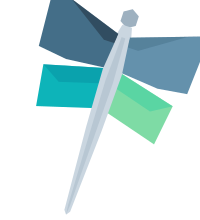
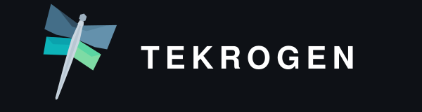
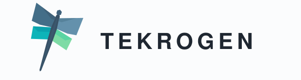
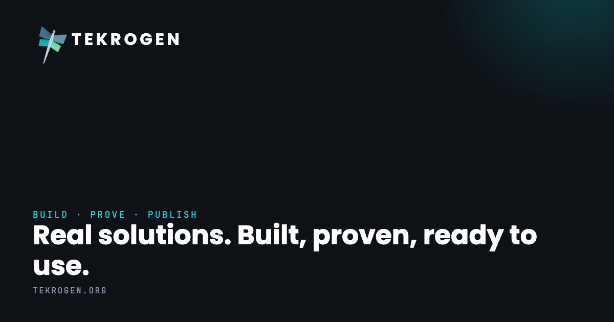

01.01 Pillars
screen
.org#446E88
.studio#6491AC
.com#0DB4B9
.net#7EDBA5
--tk-org · --tk-studio · --tk-com · --tk-net
tokens/palette.js
Every token, component, and brand surface that ships across tekrogen.org, .studio, .com, and .net — catalogued in one place. Hairlines do the work. Cyan goes one place per surface. Tilt is locked at 18°.
Field notes on running a four-entity practice from a single mark — we build it, prove it, and publish what we learned.
Tekrogen runs on a tight two-mode system. Ink for the primary surface, paper for printed lockups and the light-themed publication header. No in-between gradient backdrop — pick a side.
Small · captions, footnotes, dim secondary copy.
tekrogen.org
--tk-tilt-mark: 18deg;
$ tk build --proof
/* fluid clamps */ --tk-fs-display: clamp(40,5vw,64); --tk-fs-h1 : clamp(32,3.5vw,48); --tk-fs-h2 : 28; --tk-fs-h3 : 20; --tk-fs-body : 16; --tk-fs-eyebrow: 11; --tk-fs-meta : 10.5;
/* primary curve */ --tk-ease: cubic-bezier(.2,.7,.2,1); /* tilt-only curve */ --tk-ease-bounce: cubic-bezier(.2,.9,.3,1.2);





The canonical brand surface — header, hero, field-note cards, article, subscribe block, footer. JSX components compose the live publication.
Production logos, icons, OG cards, favicons — wrapped in cards with download buttons and a floating dock. Pattern reference for asset-export pages.
Long-form lockup specimen with clear-space, dimension callouts, and the four wing-color variants. Single source for every lockup in the system.
Seven alternate dragonfly concepts on a pan/zoom canvas — the design dialogue that produced v2. Used to evaluate future iterations.